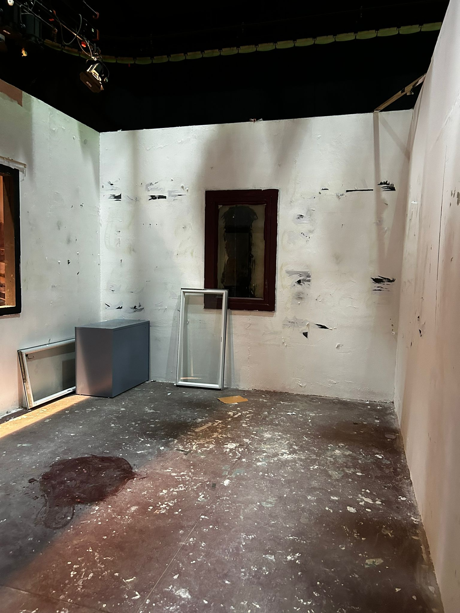
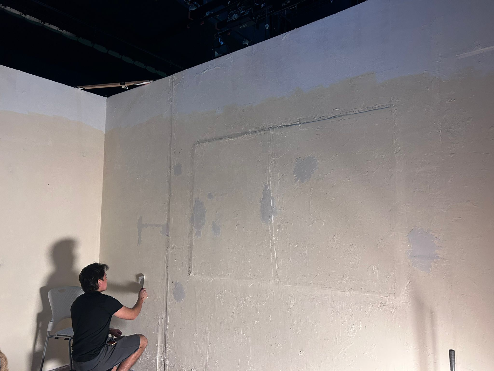
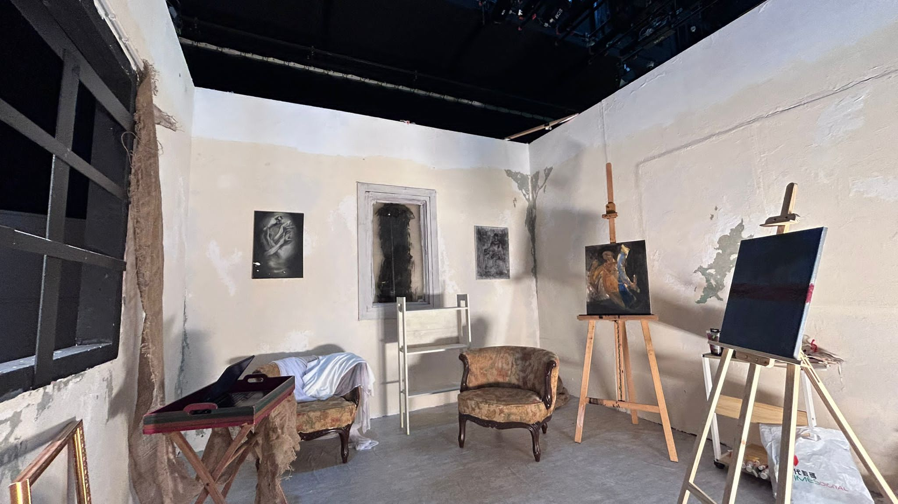
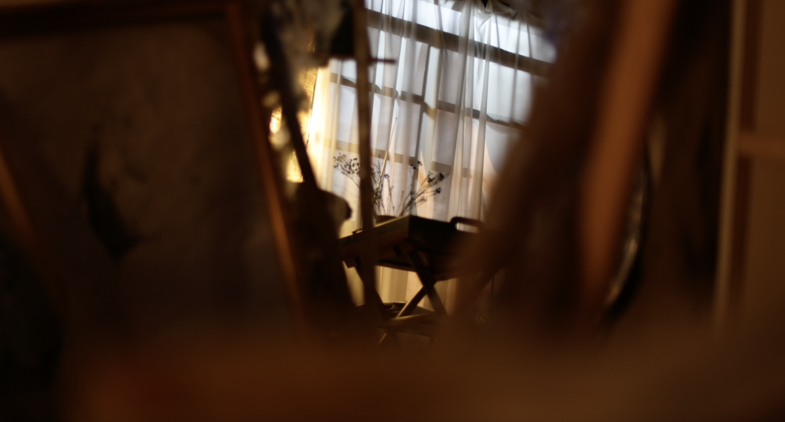
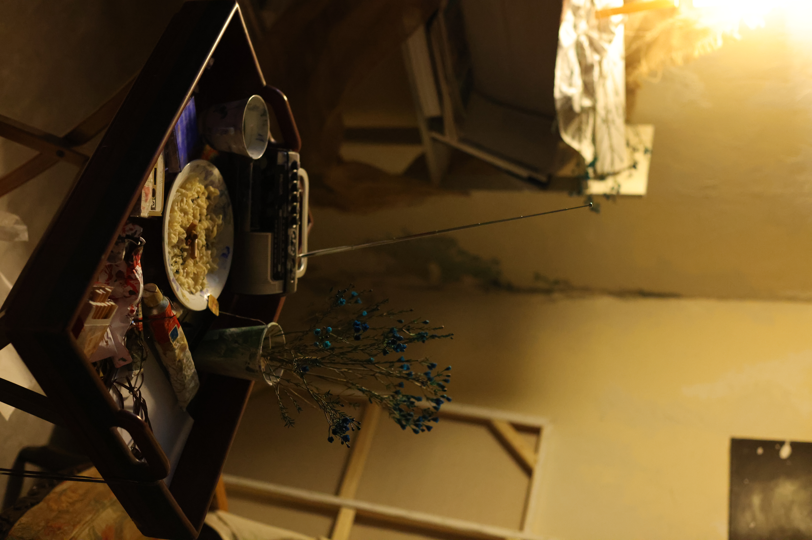
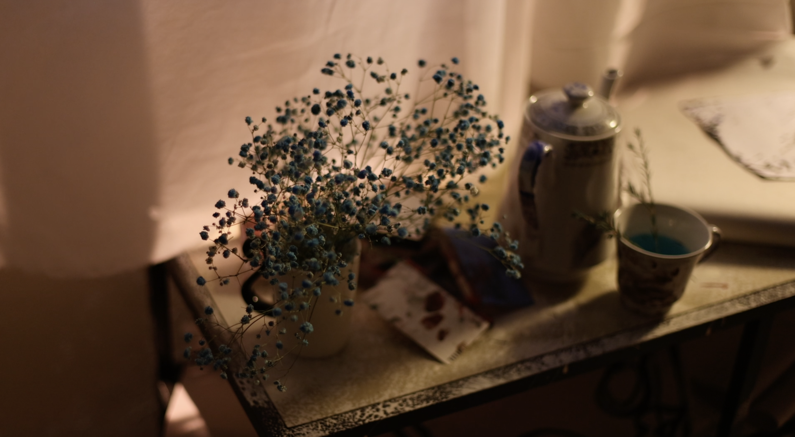
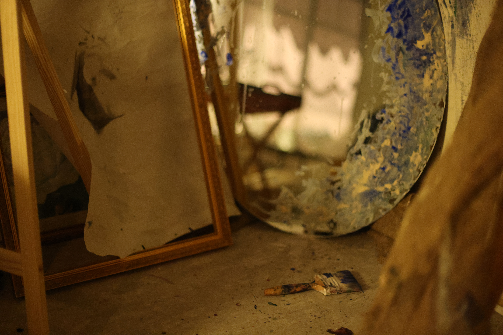

| 00:00:00 AM
e AYUSO RIZZO | AYUSORIZZOE@GMAIL.COM | @AYUSORIZZOE | AYUSORIZZOE.COM |
e AYUSO RIZZO | AYUSORIZZOE@GMAIL.COM | @AYUSORIZZOE | AYUSORIZZOE.COM |
Eyes of a Blue Dog
motion conceptual experimentalA García Márquez adaptation. A black box dressed as a painter's studio. A story about dreams and forgetting.
Eyes of a Blue Dog is a short film adaptation of Gabriel García Márquez's story of the same name. A
woman lives
in a painter's studio. A man appears. They have met before, but only in dreams. She remembers him every
time she
wakes up. He forgets her every time he does. The phrase "eyes of a blue dog" was supposed to be the
thing that
made it stick.
The film was co-produced by E. Ayuso Rizzo, S. Antonova, and C. Woen. My contributions span art
direction,
editing, and sound design.
The studio was built from scratch inside a black box. No existing location, no found objects. Everything
in the
frame was placed there deliberately because the dialogue alone wasn't going to do it. The set had to
communicate
who this woman was, how long she had been there, and what kind of person lives like that. That's the
design
problem the project was built around.

Empty black box

Wall texturing

Dressed set




